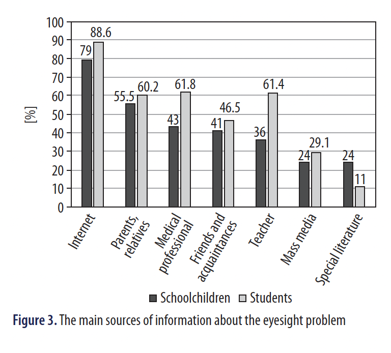

Aim of the study: To investigate the awareness of schoolchildren
and students about the risks of lack of hygienic skills of using electronic
devices (ED) for the visual system and eye symptoms.
Material and methods: Quantitative indicators were calculated for
assessing the impact of risk factors on the state of visual health of
768 schoolchildren and students from Russia and Belarus.
Results: The majority of respondents adequately assessed the risk
of exposure to behavioral factors for health and eyesight. The majority
of respondents rated their health as "good", a quarter of them
as "satisfactory". Among respondents, vision was rated as "excellent"
by 49 (24.5%) and 147 (25.9%), "good" by 53 (26.5%) and
128 (22.5%), "satisfactory" by 36 (18.0%) and 152 (26.8%), "poor"
by 62 (31.0%) and 141 (24.8%) of schoolchildren and students,
respectively. The main sources of information about the problem
of the organs of vision for respondents are the Internet (80%),
"parents" (60%), "doctors" (43.0% and 61.8%), "teacher" (36.0%
and 61.4%).
Conclusions: Despite a fairly high level of knowledge about
the negative impact on vision of irrational work with gadgets, the
temptation to use them in adverse visual conditions does not decrease.
In the group of schoolchildren, the risk indicator for health
and eyesight is more pronounced: a careless attitude to their own
health compared to students. University teachers should take into
account the fact that students consider the opinion of teachers
authoritative for the formation of health-saving competencies of
youth.
KEY WORDS: health, students, eye symptoms, electronic devices.
The world is ever changing due to advances in the realm
of science and technology. One such advance is in the field
of information and communication technology (ICT). ICT
has become a standard fixture in the lives of many young
people. In addition to the entertainment aspects, electronic
devices (ED, gadgets) play an important part in the social
lives of people [1]. In recent decades we have witnessed
a sharp increase in the availability and use of personal electronic
devices (digital devices) such as laptops and handheld
computers, smartphones, and institution's computers, tablets
and similar and associated devices [2-4]. The percentage of
smartphone users - especially among minors - is growing,
and there is growing literature suggesting increasing rates of
problematic smartphone use in children and adolescents [5].
In the last decade Russians purchased about 400 million mobile
means of communication [6], in 2019 - the record number
of smartphones - 30.14 million pieces. Between 2011 and
2017, the use of smartphones by Russian teenagers increased
from less than 20% to 80%. More active ICT use may, however,
affect the visual system and eye symptoms in a negative
way. Many authors have reported the negative effects of overuse
of electronic devices during education and leisure [7, 8].
According to a survey conducted for the Vision Council 70%
of adults say they have experienced some of the symptoms
of digital eye strain. It is becoming a widespread problem
as more people spend hours each day looking at computers,
cellphones, iPads, tablets and other electronic devices [9, 10].
As a result, the decrease in vision limits actions, causes a feeling
of being unwell, mood decline, and decreased mental
performance and quality of life. The long-term ocular effects
of smartphone and handheld digital device use are unknown.
However, a range of short-term ocular surface discomfort,
visual discomfort and asthenopic symptoms are reported
with smartphones and tablets use [11, 12]. Ocular surface
discomfort includes sore eyes, dryness, stinging, burning,
itchiness and irritation. Visual discomfort and asthenopic
symptoms include blurred vision, difficulty in refocusing between viewing distances, headache, eye strain and double
vision [13, 14].
With the increasing popularity of electronic devices,
youths spend significant time on smartphone and other ICT,
thereby developing addictive tendencies. Research concludes
that youths are not only addicted but are also developing
significant behavioral problems and visual discomfort and
symptoms owing to excessive electronic devices usage. All
that staring from frequent phone use, computer use, and TV
watching can lead to eye strain, a visual health issue that,
when found in this context, is often called computer vision
syndrome [15]. Symptoms reported by computer users are
classified into internal ocular symptoms (strain and ache),
external ocular symptoms (dryness, irritation, burning),
visual symptoms (blur, double vision) and musculoskeletal
symptoms (neck and shoulder pain) [16]. With the increased
use of electronic devices with visual displays, computer vision
syndrome is becoming a major public health issue [17].
The basic component of healthy lifestyle of youths is complying
with hygiene principles of vision protection. In this
connection it is necessary to study the awareness of basic
principles of a healthy lifestyle among the youth [12, 18, 19].
These main principles are: good-health mindset, mastering
the skills of a healthy lifestyle, positive habits, and compliance
with hygiene standards for visual health [20]. Based on the
widespread use of computer technology and mobile phones
in young people and society, we expected high ownership of
electronic devices. Further, the devices are expected to have
major impacts on the student's life from different aspects.
The aim of the study was to investigate the awareness of
schoolchildren and students about the risks of lack of hygienic
skills of using electronic devices for the visual system
and eye symptoms, and to analyze the factors influencing the
health and eyesight in modern youth.
Research questions
Based on previously available literature data, the following
questions were asked: What is the impact of the time spent
using electronic devices on schoolchildren's and students' eye
health, dependence and social behavior? What are the main
sources of information about the impact of risk factors on
health and eyesight?
Study design, setting and population
Using Google Forms, an online survey of 200 schoolchildren
of grades 9-10 (age 15-16 years) from general educational
organizations, gymnasiums and lyceums was conducted.
568 students (age 17-21 years) were also surveyed:
73% studied in the field of healthcare and medical sciences,
20% studied in education and pedagogical sciences, and the
rest studied in the field of mathematical and natural sciences.
The respondents lived in Russia (Moscow and the Moscow
Region, Samara, Arkhangelsk, Tomsk) and Belarus (Grodno).
In this research we showed that information and communication
technologies (Internet resource) and the voluntary
informed consent from respondents can be used instead of
the traditional questioning with paper forms. For example,
Google Forms can provide us with mechanisms to allow us
to make different questionnaires. Data could be transformed
into Excel or another database with the opportunities of analysis
in different statistical programs. The benefit of internet
questionnaires is a significant reduction in survey costs. The
questionnaire was developed by teachers of the Department
of Hygiene at the Pediatric Faculty of the N.I. Pirogov Federal
State Autonomous Educational Establishment of Higher Education
in the name of N. I. Pirogova of the Ministry of Health
of Russia, with certificates of specialist "Hygienic education",
"Hygiene of children and adolescents", "General hygiene".
Respondents were asked questions of an evaluative nature:
"Assess the degree of risk on health and eyesight..."". The questions
are related to a subjective assessment of the impact of
risk factors on health and, in particular, the organ of vision
and visual health. The total risk of exposure to the factor was
assessed on a 10-degree numerical scale, where 1 meant weak
intensity and 10 meant the highest intensity of the risk factor.
Statistical analysis
The statistical analysis was conducted with STATISTICA
v. 13 software (StatSoft). The compliance of the obtained values
with the law of the normal distribution of the variational series
was evaluated. Normality of variable distribution was tested
using the Shapiro-Wilk test. Quantitative data had a distribution
that did not differ from normal - methods of parametric
statistics were used. Comparison of the quantitative variable
values in two groups was performed using Student's t-test. In
order to identify differences and relationships between variables,
the χ2 test was used [21]. Values with a probability of
p < 0.05 were considered statistically significant.
Ethical considerations
The study was carried out in accordance with the requirements
of the 1975 Helsinki Declaration (as amended in 2000)
[22]. The study did not infringe on human rights, did not endanger
the respondents, met the requirements of biomedical
ethics: reviewed and approved in accordance with the good
clinical practice (GCP) rules by the Regional Committee for
Medical and Health Research Ethics in Pirogov Russian National
Research Medical University. All studies were carried
out in compliance with the ethical standards [23].
RESULTS
Interviewed groups of schoolchildren and students did
not have significant gender differences. 146 (73%) of the
respondents from school and 431 (75.9%) from university
were girls (Pearson χ2 test = 0.7, p > 0.1). The groups of respondents
did not have significant differences, as they subjectively
assessed their state of health and their vision health.
105 (52.5%) pupils rated their health as "good", 44 (22.0%)
as "satisfactory". 306 (53.9%) students rated their health as
"good", 161 (28.3%) as "satisfactory" (Pearson χ2 test = 6.9,
p > 0.05) (Figure 1).
Among schoolchildren, eye health was rated as "excellent"
by 49 (24.5%), "good" by 53 (26.5%), "satisfactory"
by 36 (18.0%), "poor" by 62 (31.0%); among students -
147 (25.9%), 128 (22.5%), 152 (26.8%) and 141 (24.8%), respectively
(Figure 2).
98.9% of schoolchildren and students use electronic
devices daily. 420 respondents (54.7%) in both groups use
a smartphone player or other electronic device with headphones
daily. The average time spent in front of a device per
day was between 4 and 5 h.
Average values for assessing the impact of risk factors indicate
that older schoolchildren and students adequately assess
the risk of exposure to behavioral factors for health (Table I).
For respondents "an adequate assessment of the risk of exposure
to a factor" was 5-7 points; for students 6-8 points. For
factors affecting the organ of vision, the degree of health risk
when working with electronic devices has been established:
in low light conditions only 26 (13.0%) schoolchildren and
72 (12.7%) students are ready to abstain from work until
returning to a well-lit place. Work in an unsuitable place
(armchair, bed, on the floor, etc.) is chosen by 114 (57.0%)
schoolchildren and 304 (53.5%) students. Work without interruption
for 2 hours or more - 55 (27.5%) and 147 (25.9%);
usually rest periods when working with electronic devices
are not used - 45 (22.5%) and 96 (16.9%), respectively. There
were no statistically significant differences between groups.
Respondents were asked questions characterizing the
practical skills of lifestyle and eye protection. To the question
"Do you often take breaks to relax when working with electronic
devices?" 39 (19.5%) schoolchildren stated that they
take a break every 30-40 minutes, which is consistent with
the hygienic principles of vision protection. This indicator
among students is 137 (24.1%). 48 (24.0%) and 105 (18.5%)
respondents, respectively, do not take breaks when working
with electronic devices.
If it is necessary to work with electronic devices in a darkened
room, only 26 (13.0%) schoolchildren will refrain from
working, which is consistent with the hygienic principles of
vision protection. 74 (37.0%) will continue to work in any
conditions. 34 (17.0%) of schoolchildren can use electronic
devices while lying down and 80 (40.0%) while sitting on
the bed. 72 (12.7%) students will refrain from working if it
is necessary to work with electronic devices in a darkened
room. 214 (37.9%) will continue to work in any conditions.
264 (46.5%) students working with electronic devices work at
an organized workplace. The rest can use electronic devices
while lying down (113; 19.9%) and sitting on the bed (191;
33.6%); no significant differences between groups.
88 (44.0%) schoolchildren answered that they do not
need vision correction - they are schoolchildren who rated
their vision as "excellent" and "good". 239 (42.1%) students
replied that they did not need vision correction. When working
with electronic devices, 11 (5.5%) pupils and 23 (4.0%)
students surveyed use specially selected glasses, 37 (18.5%)
and 122 (21.5%) do not use glasses, but they require vision
correction (they use glasses selected "for distance") and
54 (27.0%) and 150 (26.4%) use ordinary glasses, respectively.
Thus, nearly 40% of schoolchildren and students do not
adhere to the principles of vision protection in life. The risk
group of schoolchildren and students who rated their eyesight
as "poor" was determined (68; 33.5%), and when questioned,
they answered that "vision correction is not needed”
(11; 5.4%), "I need vision correction, but I don't use glasses”
(57; 28.1%) (Table II).
The main sources of information on preventive measures
for the protection of vision for schoolchildren are information
from the Internet - 158 (79.0%), information from "parents,
relatives" - 111 (55.5%), "medical professional” - 86 (43.0%)
and "teacher" - 72 (36.0%). 22 (11.0%) respondents are not
interested this topic and problem. The main sources of information
for students are the Internet - 503 (88.6%), "medical
professional" - 351 (61.8%), "teacher" - 349 (61.4%), "parents
and relatives" - 342 (60.2%), and 20 (3.5%) respondents are
not interested in this topic and problem (Figure 3).

DISCUSSION
The modern education system is a "risk zone" due to the
intensity of the educational process, which is accompanied by
stresses (mental), decreased physical activity, and disturbances
in sleep and rest. The learning process is characterized by
dynamism, high labor intensity, a variety of forms and methods
of training, an increase in the amount of information,
and the introduction of new training tools and technologies,
which requires additional reserves from the body [24, 25].
An urgent problem of modern public health is the increasing
activity of the use of ED, gadgets and, as a result, the increase
in negative effects on the organ of vision under their influence.
Children and adolescents are growing up exposed to
modern information and communication technology. Studies
have shown such modern technologies as smartphones,
tablets, and computers that have been developed and become
increasingly widespread over the past decade to be beneficial
and to constitute health risks for youth [26]. An awareness of
the basics of a healthy lifestyle and the hygienic principles of
vision protection was shown by more than 50% of schoolchildren
and students. Respondents adequately assessed the risk
of behavioral factors affecting health and visual health. Everyone
who spends a lot of time behind the screen of telephone
displays, tablets and computers is prone to computer vision
syndrome. Schoolchildren and students experience a variety
of ocular symptoms related to computer use, such as redness,
blurred vision, double vision, eye strain - symptoms of computer
vision syndrome [27, 28]. The results of studies on the
health status of schoolchildren and university students have
shown a steady negative trend towards an increase in diseases
caused by the influence of educational environment factors.
There is an increase in functional disorders and chronic diseases
of the body systems (musculoskeletal, digestive, nervous,
visual organs) acquired in the learning process [25].
Health disorders acquired during school years are exacerbated
during continuing education at university [18]. A lot
of youth face eye problems when they sit in front of a television
or a laptop screen for hours on end. In addition to this,
eye strain can lead to eye fatigue, blurry vision, and focus
issues, which can be very irritating and dangerous. Authors
have stated the negative effect of overuse of electronic devices
during education and leisure [29, 30]. In our study, mobile
phones, smartphones and laptops were the gadgets most frequently
used by respondents. Vision was considered "excellent" by 25.9% of respondents, "good" by 22.5%, "satisfactory"
by 26.8% and "bad" by 24.8%. Using gadgets for a long time
can produce symptoms of computer vision syndrome. The
average time spent in front of a device per day was between
4 and 5 hours. When using mobile phones and laptops with
an average use of 1 to 4 hours per day, subjective signs were
distinguished: blurred vision, headache and stuffy eyes [28].
The authors of this study indicate that visual complaints were
reported by 75% of the users who work for more than 5 hours
[28]. The results of the study connect long-term work with
a computer display and the accelerated development of symptoms
such as burning sensation and foreign body, diplopia,
and myopia [29].
The negative trends in the state of the organ of vision
among schoolchildren and students and the negative trends
in lifestyle revealed in the study require training in healthy
lifestyle skills in educational institutions. The role of the
teacher in this process is significant. As preventive hygiene
measures to protect eyesight, it is recommended to use electronic
devices only in places with a good level of illumination,
including artificial ones, with continuous use of no more
than 60 min, using glasses if necessary and correcting vision.
It is necessary to expand the knowledge of these population
groups on healthy lifestyle issues and motivate them to use
knowledge in professional activities and everyday life.
This study employed a large, well-defined populationbased
sample of youth. This sample had a limited age range.
The data employed in this study are from a recent data collection.
The cross-sectional design of this study precluded any
causal inference.
CONCLUSIONS
The results of the assessment of the (subjective) awareness
of schoolchildren and students about the consequences
of the irrational use of electronic devices and the hygienic
principles of vision protection indicated that more than half
of the respondents adequately assessed the risk of exposure
to behavioral factors on health and the organ of vision. Despite
a fairly high level of knowledge about the negative impact
on vision of irrational work with gadgets, the temptation
to use them in adverse visual conditions does not decrease.
In the group of schoolchildren, the risk indicator for health
and functional disorders of the organ of vision is more pronounced:
a careless attitude to their own health compared
to students.
More than half of schoolchildren perceive parents, medical
workers and friends as "sources" of information about
a healthy lifestyle. Almost two thirds of students perceive
health workers, teachers and parents as the "source" of information
about a healthy lifestyle. University teachers should
take into account the fact that students consider the opinion
of teachers authoritative for the formation of health-saving
competencies of youth.
DISCLOSURE
The authors declare no conflict of interest.
References